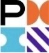
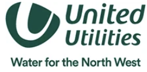
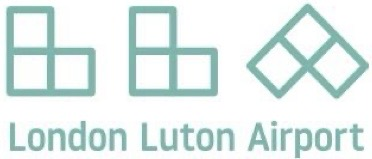
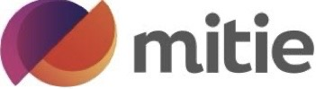
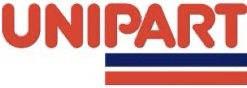
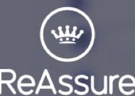
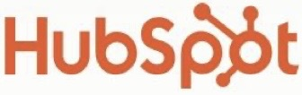

I deliver large-scale IT, infrastructure, and cyber programmes with a focus on execution certainty, operational readiness, and governance. My work spans national EUC transformations, identity and access uplift, PMO leadership, and service transition across complex, regulated, and multi-vendor environments.
My track record shows repeatability across financial services, utilities, government, healthcare, aviation, and education. I stabilise programmes, drive adoption, and ensure services are secure, resilient, and ready for BAU.

I establish clear frameworks, reporting rhythms, and decision pathways that bring stability to programmes under pressure.
I build confidence across technical, operational, and executive stakeholders by translating complexity into clear narratives.
I embed service transition early ensuring documentation, support models and operational processes are ready before go-live.
I drive programmes toward measurable results including adoption, stability, risk reduction and operational improvement.
Tesco 126k device refresh and HSBC 46k user modernisation programmes.

Cloud managed EUC lifecycle deployments across 32k+ devices.
Teams Rooms and print modernisation across academic environments.
CAF uplift strengthening access controls and governance frameworks.

MFA PAM and SSO uplift in regulated aviation environment.
Built and led PMO functions for Computacenter Belgium and Eversheds, improving reporting discipline and delivery assurance.
Delivered structured reporting, risk control, and portfolio alignment across high-governance environments including FCO, NFUM, and Dounreay Nuclear.
Transitioned global services for Synchrony (25,000 users), integrated Salesforce into BAU, and stabilised major programmes through structured readiness and support alignment.

Delivered AWS migration and SaaS integration for Telefonica.
Led ServiceNow development and supported secure hosted infrastructure for Mitie and the Home Office.

Delivered modernisation programmes for Santander, MET Office, and Unipart.

Delivered multi-stream migration and infrastructure modernisation for AdminRe and DWP.

Supported tendering, solution design, and commercial modelling across major bids, ensuring proposals were deliverable, costed, and aligned with operational reality.